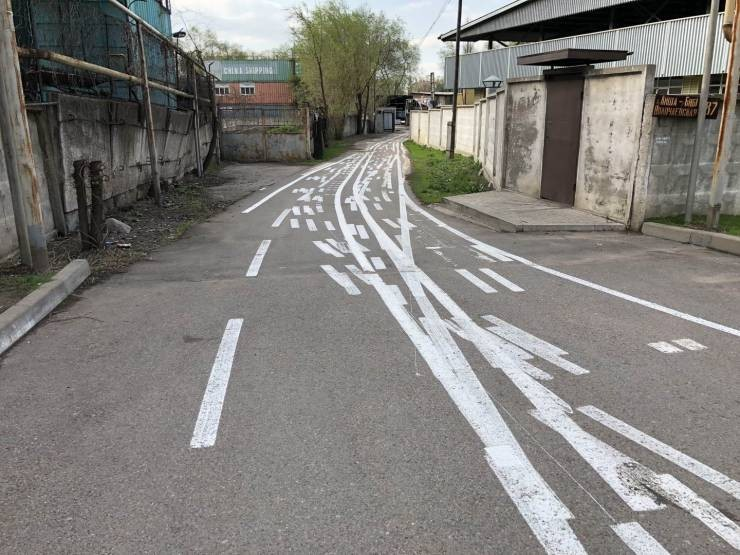

01
Starting from frustration
We began by naming what felt limiting around singular narratives, forced coherence, and the pressure to agree too quickly. These early discussions gave the manifesto its emotional and political direction.
Project Process 01
The manifesto did not appear as a finished text. It grew through conversation, disagreement, annotation, rewriting, and interface experiments that helped us decide what needed to stay open.
A brief path from shared questions to a public-facing manifesto space.
We began by naming what felt limiting around singular narratives, forced coherence, and the pressure to agree too quickly. These early discussions gave the manifesto its emotional and political direction.
Instead of writing one polished statement immediately, we gathered phrases, tensions, and partial thoughts. This let multiple voices remain visible before the text was organized.
We repeatedly returned to the wording, testing what needed clarity and what needed to remain unresolved. Revision became less about smoothing differences and more about shaping them carefully.
Once the language had enough shared weight, we translated it into a website that could hold the manifesto as an experience rather than only a block of text.
The main concerns that guided how we discussed, edited, and presented the manifesto.
Core Questions
Key Outcome
Images sourced from the internet.

Move from the process page into the public version of the manifesto.